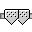

| Revision History | ||
|---|---|---|
| Revision $Rev: rev$ | $Id: MultiSlider.html,v 1.1.1.1 2003/02/28 14:54:07 jmacgill Exp $ | |
The MultiSlider is a subclass of javax.swing.JSlider and provides multiple thumbs.
The MultiSlider component allows a user to create a multiple thumb slider. The number of thumb can be specifed using setNumberOfThumbs(int) method. If the slider is in "bounded" mode, a thumb cannot be dragged over its adjacent thumbs.
 The icon for the MultiSlider.
The number of thumbs.
If it is true, a thumb cannot be dragged over its adjacent thumbs.